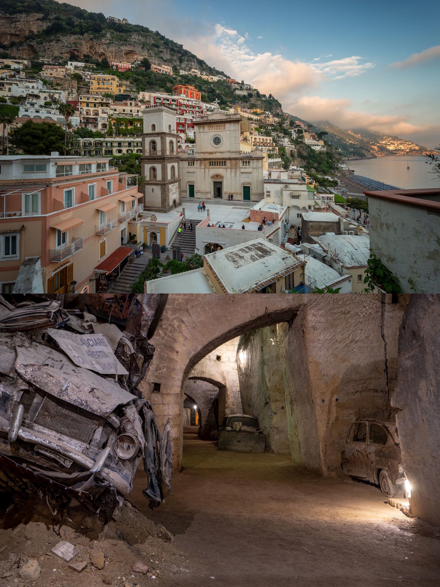
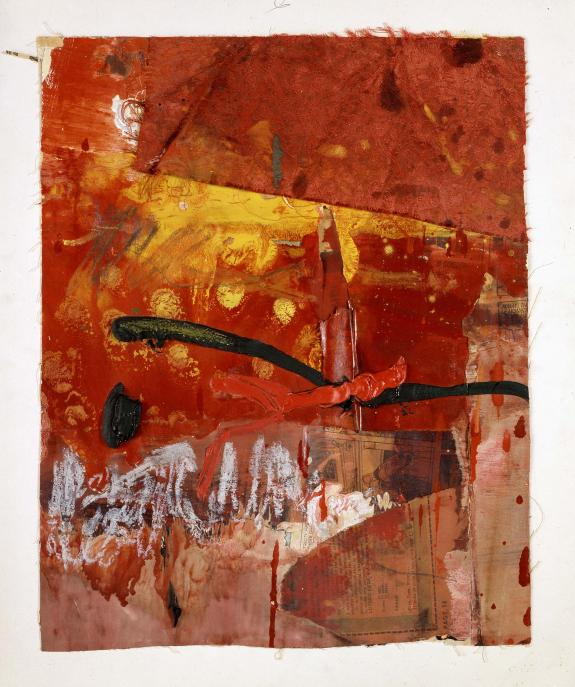
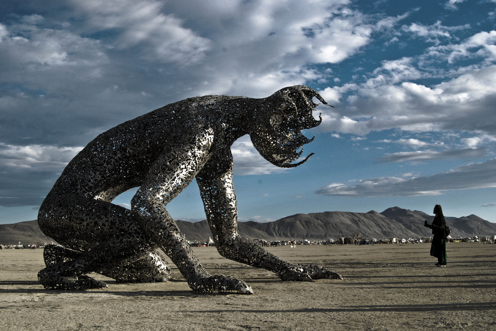

Questions
1. What's driving minimalist culture and why is it such a trend? There's a certain level of sameness across all forms of design and it makes one wonder what and why something is termed 'well-designed'. Minimal seems to equal good according to current trends. What does this mean for designers and creators? Why are we drawn to this style? Are we vicitms of a broader trend or the ones defining it and one another?
2. How much does ethnic identity matter in design?
Readings
What Lurks beneath Europe's Biggest Tourist Attractions

“There are hidden worlds all around us and I wanted to show there is more to popular tourist destinations than we might expect... Do your research before you travel and don't be afraid to look deeper.”
This Insider article by Tom Murray talks about London-based photographer Tomas Sentpetery's project on Europe's most popular travel destinations. Through his photographs he highlights the lesser known history of the envrionments that share the same area as famous tourist attractions. These include the Catacombs of Paris beneath the Eiffel Tower, which "holds the remains of more than six million people" and the abandonded Aldwych station beneath Big Ben and King's College, which served as a bomb shelter in the 1940's and was also used as a hiding place for the British Museum's treasures such as the Elgin Marbles.
This is extremely interesting to me, as it highlights the unknown and surprising stories of places and environments we take for granted or are just so familiar with. It makes you wonder about the history of all the places we've been and the people and acitivites that occupied these spaces that are so close to us.
Observations
Grant Achatz
I recently watched an episode of Chef's Table that featured American chef, Grant Achatz. He specializes in molecular gastronomy - a type of food science that experiments with physical and chemical transformations of ingredients through cooking. It focuses on 3 main areas which are, social, artistic and technical. He owns the Chicago based restaurant, Alinea.
The reason his episode interests me so much is his entire approach to the experience of dining.Achatz uses food to surprise, provoke, reflect and interact with a larger audience. He goes beyond cooking “delicious dishes” to incorporating a ‘performance’ aspect to it. He draws on the visual, olfactory, tactile, auditory and of course, taste or flavor. He challenges the audience and considers every element of the restaurant experience.
Even his process is extremely unique - he sketches his dishes out and formulates questions about his existing dishes and how he can push them further, such as "How can we explore time through food?", "How can we play on our audience's senses?"
Ancient Egyptian Art Gallery at the St. Louis Art Museum
Visiting the Ancient Egyptian Art Gallery was an experience that left me with more questions than when I entered. Seeing actual mummies, coffins and the various objects found in these old graves, makes you picture what ancient Egypt would have been like and sets your imagination loose. It also reminds you of the immense history of our world and the similarities (and differences) between our communities over the years. It's interesting to learn about the beliefs and values of communities at that time, and even more incredible to see these pieces retained.
Images + Methods
'Kalemba', William Santiago
'Untitled (Red Painting)',Robert Rauschenberg
Irma Boom
'Koilos', Michael Christian